Study 23 · 6 October 2026
Smaller sign, more fonts
The soft sign only, smaller. Its ink now prints in Print. Eight fonts for the J, switchable at the top of the page.
Open the page (switch fonts at the top)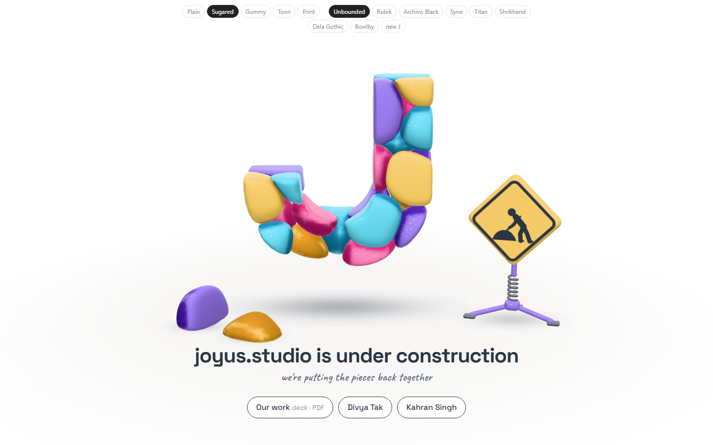
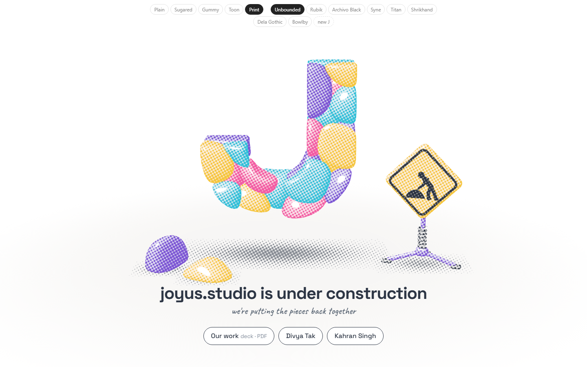
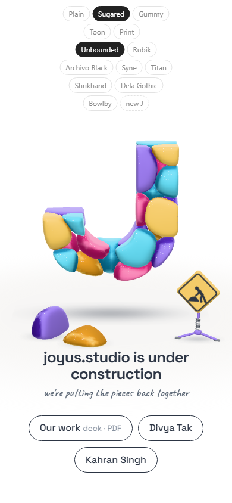
Eight fonts
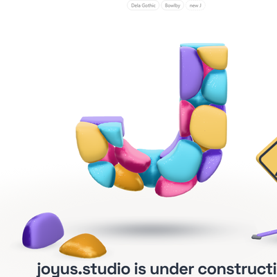
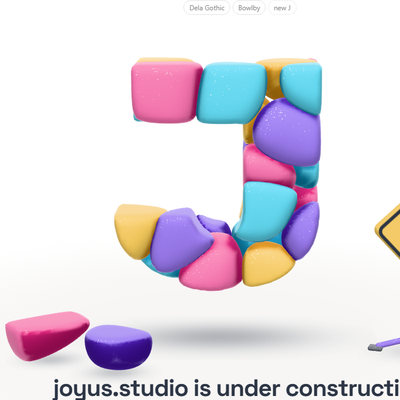
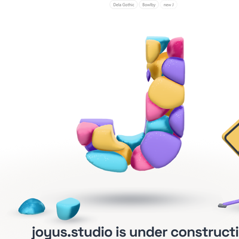
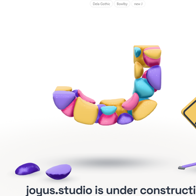
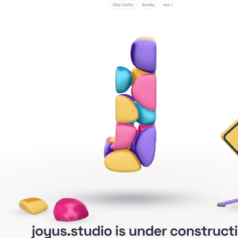
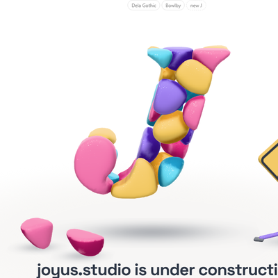
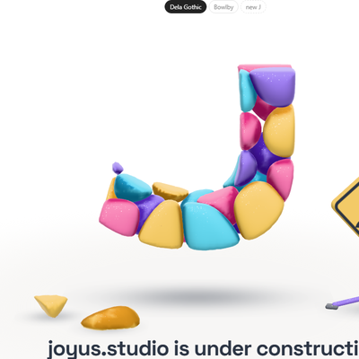
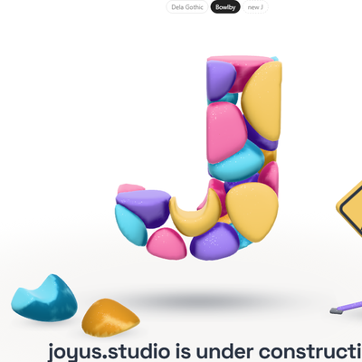
Score = how much of the font's J the stones cover (Study 20's test). It can't see Titan's problem: Titan's own J is that shape.
The sign
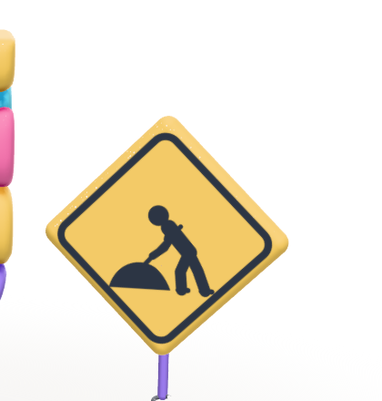
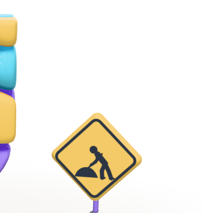
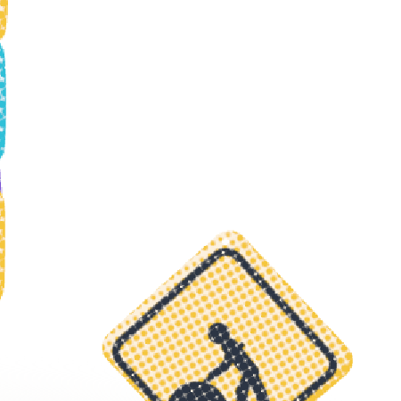
Test note: "fallen stones lie down" was loosened from 1.3× wider than tall to wider than tall. 1.3 was set for Study 19's flat stones; since 20 they're 3D, and one in this seed is chunky though already lying as low as it can.
Open
- Which font? Which look?
- Did you mean fonts for the J, or for the headline?
- Deck link, your site's address, homepage only or every page.
Test: page-test.mjs, 54 checks in a browser (all 8 fonts build; only Print screens the ink; the sign stands; random Js; phone); read by check.cjs.